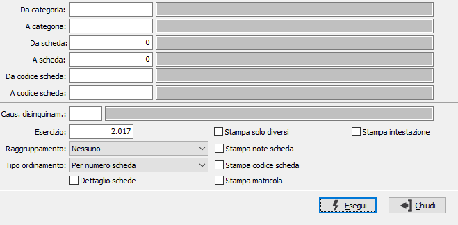

Prospetto eccedenze ammortamenti
La procedura è utilizzata se si gestisce l'ammortamento civilistico e consente di estrarre le informazioni relative agli ammortamenti fiscali applicati, considerando le eccedenze rispetto agli ammortamenti civilistici.
Accedendo al programma, compare la seguente finestra video di selezione:

DA CATEGORIA: indicare il codice della categoria fiscale dal quale si desidera iniziare l’elaborazione. Sul campo sono attive le funzioni di ricerca (F9).
A CATEGORIA: indicare il codice della categoria fiscale alla quale si desidera terminare la stampa. Sul campo sono attive le funzioni di ricerca (F9).
DA SCHEDA: indica il numero del cespite con cui iniziare la selezione. Sul campo sono attive le funzioni di ricerca (F9). L'utilizzo del numero cespite annulla quello del codice e viceversa.
A SCHEDA: indica il numero del cespite con cui terminare la selezione. Sul campo sono attive le funzioni di ricerca (F9). L'utilizzo del numero cespite annulla quello del codice e viceversa.
DA CODICE SCHEDA: indica il codice del cespite con cui iniziare la selezione. Sul campo sono attive le funzioni di ricerca (F9). L'utilizzo del numero cespite annulla quello del codice e viceversa.
A CODICE SCHEDA: indica il codice del cespite con cui terminare la selezione. Sul campo sono attive le funzioni di ricerca (F9). L'utilizzo del numero cespite annulla quello del codice e viceversa.
CAUSALE DISINQUINAMENTO: indicare il codice della causale cespiti relativa ai movimenti relativi al disinquinamento fiscale. Sul campo è attiva la ricerca F9 sulla tabella causali cespiti.
ESERCIZIO: indicare l'esercizio a cui si riferiscono gli ammortamenti da considerare. Viene automaticamente proposto l'esercizio corrente, modificabile. Non è consentita la conferma a vuoto.
RAGGRUPPAMENTO: definisce l’eventuale tipo di raggruppamento in stampa. Valori ammessi: Nessuno; Per categoria; Per centro di costo (solo OS1 Enterprise).
TIPO ORDINAMENTO: determina il criterio per l'ordinamento della stampa. Valori ammessi: Per numero scheda; Per descrizione scheda; Per codice scheda.
DETTAGLIO SCHEDE: definisce se effettuare la stampa del dettaglio delle schede cespiti (casella con segno di spunta).
STAMPA SOLO DIVERSI: stampa sol i movimenti che hanno delle differenze tra ammortamenti fiscali e civilistici (casella con segno di spunta).
STAMPA NOTE SCHEDA: definisce se deve essere stampato il contenuto del campo note (casella con segno di spunta).
STAMPA CODICE SCHEDA: definisce se deve essere stampato il codice del cespite (casella con segno di spunta).
STAMPA MATRICOLA: definisce se deve essere stampata la matricola del cespite (casella con segno di spunta).
STAMPA INTESTAZIONE: indica se deve essere stampata come prima pagina del report una pagina contenente tutte le informazioni inerenti i criteri di selezione specificati per il report stesso (casella con segno di spunta).